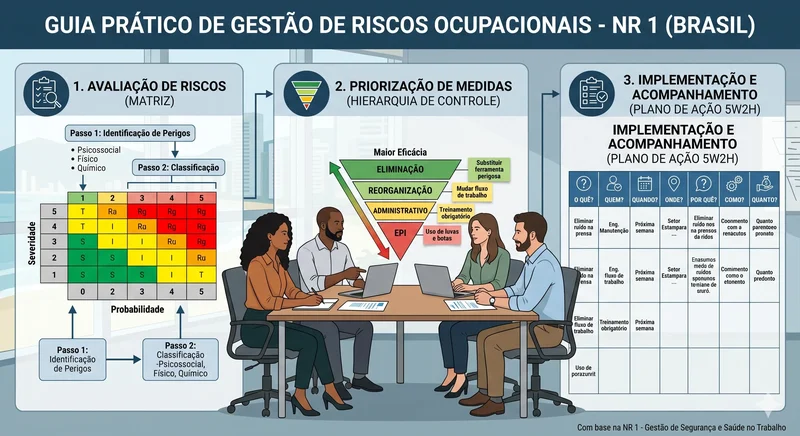

Checklist de Adequação: NR-1 (Riscos Psicossociais)
Este checklist resume o fluxo lógico para a implementação da conformidade com a Portaria MTE nº 1.419/2024.
Em 2024 – Mudança Importante na NR-1
Em 27 de agosto de 2024, o Ministério do Trabalho e Emprego publicou a Portaria MTE nº 1.419/2024. Essa portaria alterou o capítulo 1.5 da NR-1 (Norma Regulamentadora nº 1).
O que mudou?
A nova regra passou a incluir oficialmente os fatores de risco psicossociais no Gerenciamento de Riscos Ocupacionais (GRO). Isso significa que as empresas agora devem avaliar e prevenir situações como:
- excesso de pressão no trabalho;
- assédio moral;
- sobrecarga de tarefas;
- estresse excessivo;
- jornadas desgastantes;
- conflitos organizacionais.
Antes, a NR-1 focava principalmente em riscos físicos, químicos, biológicos e acidentes. Agora, a saúde mental também passa a fazer parte obrigatória da prevenção.
6 Passos para adequação do local de trabalho a NR-1 Atualizada
O que mudou na NR-1 sobre os riscos psicossociais no trabalho?
A atualização da NR-1 trouxe mudanças importantes sobre saúde mental e fatores psicossociais relacionados ao trabalho. O objetivo é fazer com que as empresas passem a identificar, avaliar e prevenir situações que possam causar sofrimento mental, estresse, esgotamento e outros problemas de saúde nos trabalhadores. Para adequar o ambiente de trabalho as novas regras, 6 ações são fundamentais:
1. Planejamento e Governança
- Formação do Comitê Multidisciplinar: (RH, SST, CIPA, Liderança).
- Definição de Responsabilidades: Estabelecer quem conduz cada fase (interno vs. assessoria).
- Sensibilização da Liderança: Treinamento sobre o conceito de "riscos psicossociais relacionados ao trabalho".
2. Diagnóstico Histórico
- Levantamento de Absenteísmo: Análise de afastamentos (CID F e M) dos últimos 24 meses.
- Análise de CAT: Investigação de acidentes e adoecimentos ocupacionais pretéritos.
- Revisão de Indicadores: Análise do relatório analítico do PCMSO e histórico de ouvidoria/canais de denúncia.
3. Metodologia e Escuta Ativa
- Seleção da Ferramenta de Avaliação: (Questionários validados ou dinâmicas/oficinas).
- Protocolo de Anonimato e Segurança: Garantir a confidencialidade das respostas.
- Campanha de Comunicação: Sensibilizar trabalhadores sobre o foco no "trabalho real" e na organização do trabalho.
4. Identificação de Perigos (AEP)
- Mapeamento do "Trabalho Real": Comparação entre o que é prescrito (manuais) e o que é executado (rotina).
- Varredura de Estressores: Identificação de fatores como sobrecarga, assédio, clareza de papel, autonomia e suporte social.
- Caracterização da Exposição: Registro da duração, frequência e intensidade de cada perigo.
5. Avaliação e Classificação
- Aplicação da Matriz de Risco: Definição da Severidade x Probabilidade para cada perigo psicossocial.
- Desenho das Medidas de Prevenção: Priorização pela "hierarquia de controle" (Eliminação > Reorganização > Administrativo).
- Plano de Ação (5W2H): Definição de metas, prazos, responsáveis e indicadores de sucesso.

6. Documentação e Integração
- Atualização do Inventário de Riscos: Inclusão formal de todos os perigos/agravos identificados.
- Formalização do Plano de Ação no PGR: Garantir o registro legal das medidas de controle.
- Arquivo da AEP: Garantir que a avaliação esteja disponível conforme exigência legal.
7. Monitoramento e Melhoria
- Ciclo de Revisão: Estabelecer gatilhos para revisão (mudanças de processo, ineficácia de medidas, novos perigos).
- Avaliação da Eficácia: Coleta de feedback após a implementação das medidas para verificar a melhoria no ambiente de trabalho.
Referências Bibliográficas
- BRASIL. Ministério do Trabalho e Emprego. Norma Regulamentadora nº 1 (NR-1) — Disposições Gerais e Gerenciamento de Riscos Ocupacionais. Portaria MTb nº 3.214, de 8 de junho de 1978 (atualizada). Disponível em: https://www.gov.br/trabalho-e-emprego/pt-br/acesso-a-informacao/normas-regulamentadoras. Acesso em: 20 dez. 2025.
- BRASIL. Ministério do Trabalho e Emprego. Norma Regulamentadora nº 7 (NR-7) — Programa de Controle Médico de Saúde Ocupacional. Disponível em: https://www.gov.br/trabalho-e-emprego/pt-br/acesso-a-informacao/normas-regulamentadoras. Acesso em: 20 dez. 2025.
- BRASIL. Ministério do Trabalho e Emprego. Norma Regulamentadora nº 9 (NR-9) — Programa de Prevenção de Riscos Ambientais. Disponível em: https://www.gov.br/trabalho-e-emprego/pt-br/acesso-a-informacao/normas-regulamentadoras. Acesso em: 20 dez. 2025.
- ORGANIZAÇÃO MUNDIAL DA SAÚDE (OMS). Guidelines on Mental Health at Work. Geneva: WHO, 2022. Disponível em: https://www.who.int/publications/i/item/9789240053052. Acesso em: 20 dez. 2025.
- MASLACH, C.; LEITER, M. P. The Truth About Burnout: How Organizations Cause Personal Stress and What to Do About It. San Francisco: Jossey-Bass, 1997.
- KARASEK, R.; THEORELL, T. Healthy Work: Stress, Productivity, and the Reconstruction of Working Life. New York: Basic Books, 1990.
- CONSELHO FEDERAL DE ENFERMAGEM (COFEN). Resolução COFEN nº 560/2012 — Normas de Atuação do Enfermeiro na Saúde do Trabalhador. Disponível em: https://www.cofen.gov.br. Acesso em: 20 dez. 2025.
- ASSOCIAÇÃO BRASILEIRA DE ENFERMAGEM DO TRABALHO (ABENT). Diretrizes para Atuação do Enfermeiro do Trabalho. São Paulo: ABENT, 2023.